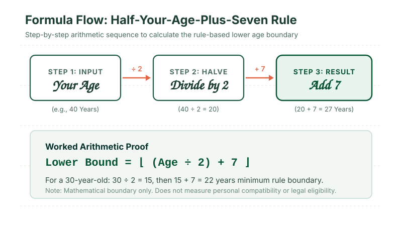
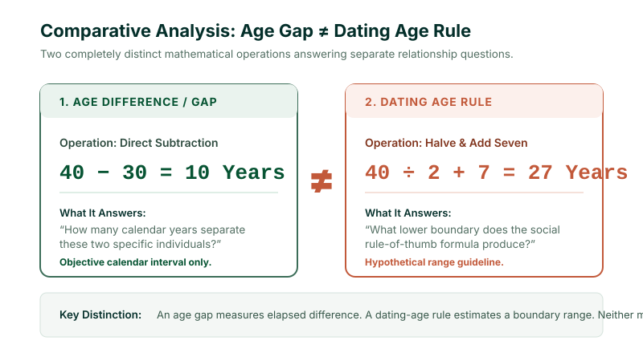

The commonly known dating age rule uses the half-your-age-plus-seven calculation to determine a mathematical lower boundary: Minimum Age = Your Age ÷ 2 + 7. An inverted formula estimates an upper boundary: Maximum Age = (Your Age − 7) × 2. For example, at age 40, the formula produces a numerical range of 27 to 66. This figure is an informal social rule of thumb—it is not a scientific measure of relationship compatibility, a legal benchmark, or a personal dating recommendation.
1. What Is the Dating Age Rule?
The dating age rule refers to a widely discussed mathematical rule of thumb used to estimate whether an age difference between two adults falls within a socially familiar or conventional boundary. Rather than evaluating emotional compatibility or personal maturity, the rule processes a single numerical input—a person's chronological age—to calculate a lower boundary and an upper boundary.
The most recognizable version of the formula is:
Half Your Age Plus Seven
To see how this works in practice, consider someone who is 40 years old:
- Take the age:
40 - Divide by two:
40 ÷ 2 = 20 - Add seven:
20 + 7 = 27
In this scenario, the formula produces 27 as its mathematical lower boundary.
Notice the deliberate wording: we do not say “27 is the correct age for a 40-year-old to date.” We say: “The formula produces 27 as its mathematical lower boundary.” This distinction is critical because arithmetic operations cannot evaluate relationship compatibility, mutual respect, or personal life goals.
Historically, this rule of thumb appeared in print at least as early as 1901 in French author Max O'Rell's book Her Royal Highness Woman, where it was originally presented as an informal piece of advice regarding the ideal age of a bride relative to an older groom. Over the subsequent century, popular culture and social commentary adopted the phrase as a symmetrical test for socially conventional age differences across all adult relationships.
2. How Does the Half-Your-Age-Plus-Seven Rule Work?
The mathematical operation behind the rule consists of two sequential steps: halving the chronological age and adding a constant shift of seven years. The division step scales the acceptable age gap proportionally as a person gets older, while the constant addition of seven anchors the formula so that younger adults are not assigned unrealistically wide age differences.
Consider a 30-year-old:
30 ÷ 2 = 1515 + 7 = 22
Here, the formula produces 22 as the mathematical lower boundary. The difference between 30 and 22 is 8 years. For a 20-year-old, the same formula yields 20 ÷ 2 + 7 = 17 (a gap of only 3 years). For a 60-year-old, it yields 60 ÷ 2 + 7 = 37 (a gap of 23 years). The formula inherently expands the allowable age gap as people advance in age.

3. Dating Age Rule Formula
To analyze the dating age rule comprehensively, it must be understood as a dual-boundary equation. The conventional phrase calculates the minimum age, but through basic algebra, the formula can be inverted to calculate the corresponding maximum age.
Minimum Dating Age Formula (Lower Boundary)
Example for Age 40:
40 ÷ 2 + 7 = 20 + 7 = 27
The mathematical minimum produced by the rule is 27.
Maximum Dating Age Formula (Upper Boundary)
How the Inversion Works:
If a younger partner \(B\) must satisfy \(B \ge \frac{A}{2} + 7\), then solving for \(A\) gives:
\(B - 7 \ge \frac{A}{2} \implies A \le 2(B - 7)\).
Example for Age 40:
(40 − 7) × 2 = 33 × 2 = 66
The mathematical upper boundary produced by the inverted rule is 66.
Combining both boundaries for someone aged 40 yields a mathematical range of 27 to 66. This is an objective arithmetic calculation derived from the formula; it does not constitute advice on who any specific 40-year-old should date.
4. Dating Age Rule Examples
Because the formula involves division by two, odd-numbered ages naturally generate fractional outcomes (half-years). In everyday discussions, people often wonder whether to round up or down. A rigorous calculator states its display conventions explicitly rather than silently altering the result.
| Your Age | Half Your Age | + 7 (Minimum) | Inverted Formula | Calculated Range |
|---|---|---|---|---|
| 20 | 10.0 | 17.0 | (20 − 7) × 2 | 17 – 26 |
| 22 | 11.0 | 18.0 | (22 − 7) × 2 | 18 – 30 |
| 25 | 12.5 | 19.5 | (25 − 7) × 2 | 19.5 – 36 |
| 30 | 15.0 | 22.0 | (30 − 7) × 2 | 22 – 46 |
| 35 | 17.5 | 24.5 | (35 − 7) × 2 | 24.5 – 56 |
| 40 | 20.0 | 27.0 | (40 − 7) × 2 | 27 – 66 |
| 45 | 22.5 | 29.5 | (45 − 7) × 2 | 29.5 – 76 |
| 50 | 25.0 | 32.0 | (50 − 7) × 2 | 32 – 86 |
| 60 | 30.0 | 37.0 | (60 − 7) × 2 | 37 – 106 |
Notice that at older ages, the mathematical upper boundary expands significantly. For a 60-year-old, the upper boundary of 106 illustrates why the formula must be understood as a historical curiosity and simple mathematical model rather than an absolute blueprint for real-world pairing.
5. Dating Age Rule Chart
Below is a quick reference chart demonstrating the raw mathematical outputs of the rule across adult chronological ages. You can also compute any custom age using our live dating age rule calculator.
| Age | Rule Minimum | Rule Maximum | Total Span | Contextual Assessment |
|---|---|---|---|---|
| 18 | 16.0* | 22.0 | 6.0 yrs | *Below adult legal baseline |
| 20 | 17.0* | 26.0 | 9.0 yrs | *Below adult legal baseline |
| 22 | 18.0 | 30.0 | 12.0 yrs | First adult-bounded minimum |
| 26 | 20.0 | 38.0 | 18.0 yrs | Narrow young-adult span |
| 30 | 22.0 | 46.0 | 24.0 yrs | Moderate career-stage span |
| 35 | 24.5 | 56.0 | 31.5 yrs | Broad adult range |
| 40 | 27.0 | 66.0 | 39.0 yrs | Substantial age span |
| 50 | 32.0 | 86.0 | 54.0 yrs | Expansive upper boundary |
A mathematical formula can produce an output below 18 (e.g., 18 ÷ 2 + 7 = 16 or 20 ÷ 2 + 7 = 17). That raw mathematical output must never be interpreted as a dating recommendation involving minors. Age-of-consent statutes, close-in-age exemptions, and child-protection laws vary by state and country. Mathematical formulas do not override the law, and this educational website is not legal counsel.
6. What Does the Dating Age Range Mean?
When someone receives a dating age range from a calculator—such as 27 to 66 for a 40-year-old—it is vital to distinguish between three separate concepts that are frequently blurred in online discussions:
- The Mathematical Range: The numerical output produced by executing
Age ÷ 2 + 7and(Age − 7) × 2. This is an objective calculation based solely on input arithmetic. - The Elapsed Age Difference: The literal count of calendar years, months, and days that separate two people's dates of birth. For instance, between someone aged 40 and someone aged 30, the age difference is exactly 10 years.
- Relationship Suitability: Whether two individuals share values, communication styles, emotional maturity, life goals, financial expectations, and mutual respect. This is something no mathematical formula can measure.
A formula cannot evaluate whether two people are compatible, whether their relationship is healthy, or whether their lifestyles align. Treating a formula output as proof of relationship suitability misunderstands both mathematics and human relationships.
7. Is the Dating Age Rule Scientific?
To be clear: no, the half-your-age-plus-seven rule is not a validated scientific formula. It is an informal social rule of thumb and cultural meme rather than an empirically derived law of sociology or psychology.
Some academic research has examined how people perceive age differences. For example, a landmark 2000 study by Dutch psychologists Bram Buunk and colleagues (*Evolution and Human Behavior*) investigated age preferences across different age brackets. They found that while men and women generally report wider acceptable age ranges as they grow older, their actual preferences do not neatly track the half-your-age-plus-seven formula. Men in older cohorts often express interest in partners younger than the formula's lower boundary, whereas women consistently prefer partners closer to their own age.
Consequently, avoid claims such as:
- ❌ “Science has proven that half-your-age-plus-seven creates the ideal relationship.”
- ❌ “Research shows couples outside this rule always divorce.”
- ❌ “The formula predicts relationship longevity.”
The formula is simply a cultural heuristic that illustrates how social tolerance for age gaps tends to expand as people age.
8. Is the Dating Age Rule a Legal Standard?
The dating age rule holds zero legal authority in any jurisdiction worldwide. Legal rights, obligations, and protections concerning relationships, marriage, and sexual consent are established strictly by national, state, and provincial legislation.
Consider the following critical points:
- Age of Consent Laws Differ: The legal age of consent varies widely—for example, 16 in the United Kingdom and some US states, 17 in others, and 18 in others.
- Close-in-Age Provisions: Many jurisdictions feature statutory "Romeo and Juliet" laws that provide exemptions for consensual relationships between adolescents close in age, regardless of what an informal mathematical formula suggests.
- Legal Adulthood: In most democracies, adults aged 18 and older are legally autonomous to date any consenting adult, regardless of whether their age gap is 2 years or 40 years.
For questions concerning legal rights, consent, or marital requirements, consult the applicable statutes of your jurisdiction or seek qualified legal counsel.
9. Dating Age Rule vs Age Difference
A common source of confusion is mixing up the dating age rule with an age difference calculation. While both involve comparing ages, they serve entirely different analytical functions.
| Concept | Mathematical Operation | Primary Question Answered | Relevant Tool |
|---|---|---|---|
| Dating Age Rule | Age ÷ 2 + 7 and (Age − 7) × 2 |
What is the socially conventional lower and upper age boundary? | Dating Age Calculator |
| Age Difference | Date of Birth A − Date of Birth B |
What is the exact calendar interval between two people? | Age Difference Calculator |
| Age Gap | Older Age − Younger Age |
How many years separate two stated chronological ages? | Age Gap Calculator |
| Chronological Age | Reference Date − Date of Birth |
How old is one person in completed years, months, and days? | Age Calculator |
Consider two individuals: Person A is 40, and Person B is 30.
- Age Difference:
40 − 30 = 10 years. That is the factual calendar gap between them. - Dating Age Rule for Person A:
40 ÷ 2 + 7 = 27. Person B (age 30) falls within Person A's rule-based range of 27 to 66. - Dating Age Rule for Person B:
30 ÷ 2 + 7 = 22, and(30 − 7) × 2 = 46. Person A (age 40) falls within Person B's rule-based range of 22 to 46.

If you want to know the exact calendar time separating two birthdays down to the day, use our Age Difference Calculator. If you want to explore the rule-of-thumb boundaries, use our Dating Age Calculator.
10. Why the Dating Age Rule Has Limitations
While the half-your-age-plus-seven rule provides a quick conversational metric, it exhibits significant structural limitations when applied to real-world relationships:
- It Is Purely Chronological: The equation only processes years. It cannot measure maturity, empathy, life experience, or emotional readiness.
- It Ignores Life Stages: A 7-year age gap between a 19-year-old and a 26-year-old involves vastly different life stages (e.g., student living at home vs. established working professional). A 7-year age gap between a 45-year-old and a 52-year-old typically involves shared adult milestones and responsibilities.
- Extreme Upper Boundaries at Older Ages: At age 60, the inverted formula produces an upper boundary of 106. At age 70, it produces 126. These numbers are arithmetic artifacts of multiplying by two rather than reflections of human longevity.
- Cultural Variations: Age gap norms vary across cultures, generations, and historical eras. A formula derived from late-Victorian European etiquette does not reflect universal human values.
- It Cannot Predict Happiness: Countless couples within the rule separate, while many couples outside the rule build long-lasting, fulfilling partnerships.
11. What Happens When the Formula Gives an Age Below 18?
One of the most important technical quirks of the half-your-age-plus-seven rule occurs with younger adult inputs:
- For an 18-year-old:
18 ÷ 2 + 7 = 9 + 7 = 16 - For a 19-year-old:
19 ÷ 2 + 7 = 9.5 + 7 = 16.5 - For a 20-year-old:
20 ÷ 2 + 7 = 10 + 7 = 17 - For a 21-year-old:
21 ÷ 2 + 7 = 10.5 + 7 = 17.5 - For a 22-year-old:
22 ÷ 2 + 7 = 11 + 7 = 18
Mathematically, the formula does not produce an adult lower boundary of 18 until a person reaches 22 years of age.
Because the arithmetic produces numbers below 18 for any user under 22, responsible tools apply an adult baseline. Our live Dating Age Calculator explicitly highlights statutory adult guardrails: when an input produces an arithmetic boundary below 18, the tool displays an informational alert clarifying that legal adult status supersedes informal mathematical rules.
12. How to Use a Dating Age Calculator
Using a digital tool makes exploring the half-your-age-plus-seven rule effortless and ensures mathematical symmetry. Here is how to use the Age Calculator Lab Dating Age Calculator:
- Choose Your Mode: Select either “Single Age Range” to find your theoretical boundaries or “Two-Person Evaluation” to evaluate mutual symmetry between two specific ages.
- Enter Chronological Age: Input your age in whole years.
- Review the Calculated Boundaries: View the exact minimum boundary (
Age ÷ 2 + 7) and maximum boundary ((Age − 7) × 2) rendered on a dynamic visual range bar. - Inspect Mutual Symmetry: In two-person mode, check whether both partners simultaneously fall within each other's acceptable ranges.
- Interpret Responsibly: Keep in mind that the output is an educational heuristic, not a test of relationship suitability.
13. Dating Age Rule vs Age Gap Calculator: Which One Should You Use?
Age Calculator Lab provides dedicated calculation tools tailored to specific analytical questions. Use the table below to select the tool that matches your calculation goal:
| Your Specific Question | Recommended Tool | Input Needed |
|---|---|---|
| “What is the theoretical range produced by the half-your-age-plus-seven rule?” | Dating Age Calculator | One or two adult ages |
| “How many years apart are two specific people?” | Age Gap Calculator | Two chronological ages |
| “What is the exact calendar difference in years, months, and days between two birthdays?” | Age Difference Calculator | Two complete dates of birth |
| “What is my exact age right now or on a specific milestone date?” | Age Calculator | Date of birth & reference date |
| “How old was I or will I be on a historical or future date?” | Age on Date Calculator | Birth date & target date |
14. Frequently Asked Questions
What is the dating age rule?
The dating age rule is a widely discussed mathematical rule of thumb used to estimate an acceptable lower and upper age range in dating. Its most famous implementation uses half your age plus seven to determine a lower boundary.
What is the half-your-age-plus-seven rule?
The formula is: Minimum Age = Your Age ÷ 2 + 7. It calculates an informal mathematical lower age boundary based on a person's current chronological age.
How do I calculate the minimum dating age?
Divide your age by two and add seven. For example, for someone who is 40 years old: 40 ÷ 2 = 20, and 20 + 7 = 27.
How do I calculate the maximum dating age?
The reverse form of the rule is: Maximum Age = (Your Age − 7) × 2. For someone aged 40: (40 − 7) = 33, and 33 × 2 = 66.
Is the dating age rule scientifically proven?
No. It is an informal cultural rule of thumb, not a validated scientific model. Psychological research shows that real-world partner preferences do not conform strictly to this mathematical curve.
Is the dating age rule legally binding?
No. The rule carries no legal weight. Legal consent, marriage requirements, and statutory protections are determined exclusively by applicable laws in your jurisdiction.
What is the dating age range for a 30-year-old?
Applying the formula: 30 ÷ 2 + 7 = 22 for the lower boundary, and (30 − 7) × 2 = 46 for the upper boundary. The resulting mathematical range is 22 to 46.
What is the dating age range for a 40-year-old?
Applying the formula: 40 ÷ 2 + 7 = 27 for the lower boundary, and (40 − 7) × 2 = 66 for the upper boundary. The resulting mathematical range is 27 to 66.
Is age gap the same as age difference?
In everyday conversation, the terms are often used interchangeably to describe how many years separate two people (e.g., 40 − 30 = 10). The dating age rule, by contrast, is a distinct formula that computes theoretical boundary limits.
Can the dating age rule tell me who I should date?
No. The formula calculates a numerical boundary only. It cannot evaluate emotional maturity, personal compatibility, shared values, or relationship health.
15. Final Takeaway
The half-your-age-plus-seven rule provides a simple, structured mathematical method for estimating a dating age range. By calculating a lower boundary with Age ÷ 2 + 7 and an upper boundary with (Age − 7) × 2, it reflects how social tolerance for age gaps tends to expand over a person's lifespan.
However, the formula's output must always be kept in proper perspective: it is an informal rule of thumb, not an empirical compatibility test, a legal requirement, or a personal dating recommendation. If you want to compute your own theoretical boundaries and explore mutual symmetry between two ages, try our interactive calculator:
18. Reviewed & Methodology
This guide explains the arithmetic formulas underlying the dating age rule and distinguishes mathematical models from chronological age, age differences, and legal standards.
- Calculation Methodology: Lower boundary =
⌊ (Age ÷ 2) + 7 ⌋; Inverted upper boundary =(Age − 7) × 2. - Historical Reference: Max O'Rell, Her Royal Highness Woman (1901); Buunk et al., Evolution and Human Behavior (2000).
- Purpose: Educational and mathematical analysis of an informal cultural rule of thumb.
- Important Disclaimer: Mathematical formulas do not constitute legal advice, relationship counseling, or compatibility evaluations. Results below age 18 do not constitute dating recommendations.
- Last Editorial Review: October 2026 by Navjeet Kamboj.